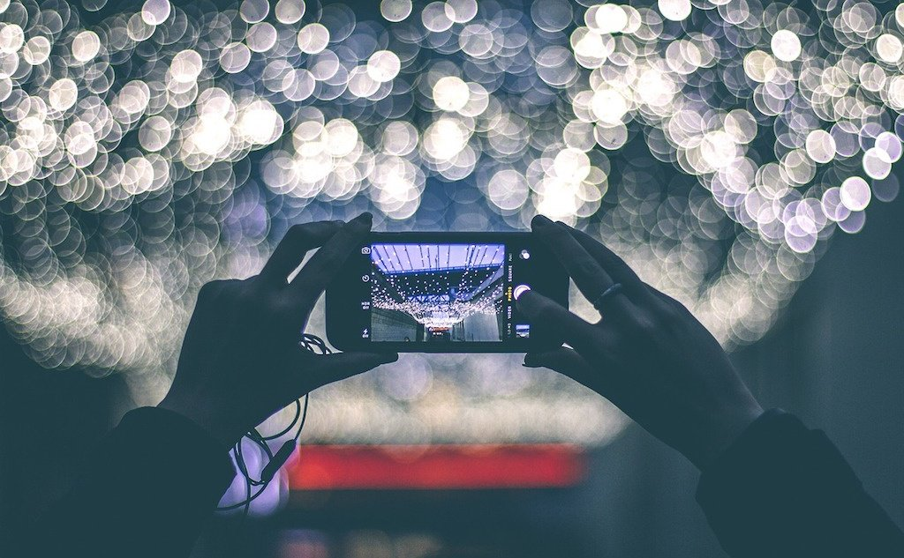

В данной статье я собрала подборку сайтов, которые помогут фотографу найти вдохновение, узнать что-то новое о фотографии и обработке фото, а так же на каких ресурсах можно опубликовать свои фото.

Лучшие фоторесуры для вдохновения:
- National Geographic Photography. Известен своими потрясающими снимками дикой природы.
- BBC News In Pictures. Возможно, немного консервативно, но очень качественно.
- Great Photojournalism. Сообщество профессиональных фотожурналистов.
- World Press Photo. Архив фотографий участников ежегодного конкурса, проводящегося с 1955 года.
- File Magazine. Журнал неординарных, бросающих вызов, снимков и иллюстраций.
- MagnumPhotos. Работы профессиональных фотографов агентства Magnum.
- Royal Photography Society. Галерея сообщества британских фотографов.
- Phase. Журнал с интересными проектами фотографов из разных стран.
- Unsplash. Галерея фотографий высокого качества.
- 500px. Популярный ресурс для фотографов.
- Pinterest. Довольно хаотичный ресурс, но при удачно сформулированном запросе может оказаться полезным.
- Inspirationgrid. Огромная коллекция качественных снимков.
- PlanetPics. Фотографии красивейших мест Земли.
- Weatherscapes. Сайт удивительных фотографий погодных явлений.
Когда мне не хватает вдохновения я обычно захажу на MagnumPhotos, потому что там больше всего именно художественных фотографий. Также я обычно просто просматриваю социальные сети, потому что многие фотографы выкладывают туда свои работы.
Обучающие материалы:
- Fototips.ru Советы по выбору оборудования, съёмке, обработке.
- «Простые фокусы». Ежедневные статьи по самым разнообразным темам для фотографов.
- Photo-Monster. Советы по фотосъёмке от профессионалов.
- «Культпросвет». Раздел на сайте Photograher.ru со статьями по теории и практике и вдохновляющими интервью.
- Russian Photo. Уроки фотографии, разбитые по категориям.
- «Фотоиндустрия». Уроки фотографии, обработки, ретуши.
- Photomotion.ru Вдохновляющие советы.
- Prophotos. Большая коллекция уроков и инструкций.
- MorgueFile Classroom. Десять уроков по фотографии от фриланс-фотографа Джоди Костон.
- Photonet learning. Раздел с уроками от одного из самых масштабных фоторесурсов на английском языке.
- Photomanual. Просто о сложных вещах в фотографии.
- «Фотография для начинающих». Основы фотографии для новичков в полном курсе на Coursera.
- Fujifilmru. Образовательный проект, из которого вы узнаете распространённые мифы о композиции. А ещё научитесь выбирать подходящий объектив.
- Photo-monster. Видеоуроки по разным направлениям фотосъёмки: от портретов до пейзажей.
Публикация
Зачастую фотограф не имеет представления где можно разместить свои работы в интернете, помимо своего сайта. Здесь я привела список сайтов, которые можно использовать в качестве своего фотоблога.

Публикация в своем блоге:
- Facebook. Почему бы просто не создать альбом. Ограничений по количеству снимков нет, настройки приватности очень гибкие.
- «ВКонтакте». Аналагочно с Facebook.
- LiveJournal. Широко известный ресурс, подходящий для ведения фотоблога.
- DeviantArt. Огромное мультидисциплинарное сообщество, в рамках которого фотографии отведён большой раздел с множеством подкатегорий.
- SmugMug. Здесь можно не только собрать портфолио из авторских снимков, но и получить доход от использования фотографий. Предлагается две недели бесплатного пользования.
- Photoshelter. Одна из наиболее популярных платформ для создания онлайн-портфолио.
- Carbonmade. Очень милый ресурс для публикации своего портфолио с ограниченным количеством бесплатных фото.
- Flickr. Можно выкладывать фотографии в высоком разрешении и объединяться в группы по интересам.
- Google Photos. Надёжное хранилище для ваших снимков, есть возможность создавать альбомы и истории, чтобы поделиться ими с друзьями.
- Behanc. Этот сервис облюбовали дизайнеры, но здесь же можно рассказать о творческом процессе и поделиться своими лучшими работами.
- Tumblr. Блог-платформа, на которой можно удобно собрать своё портфолио.
Публикация в рамках конкурсов:
- PhotoContestInside. Обзор актуальных фотоконкурсов.
- Your Photo on BBC. Каждую неделю эксперты BBC предлагают темы для фотографий, лучшие из которых публикуются по четвергам.
- ViewBug. Еженедельные фотоконкурсы под руководством всемирно известных фотографов и брендов.
- Worldphoto. Масштабный фотоконкурс, в котором компания Sony отбирает лучшие фотографии профессионалов и любителей со всего мира.
- Allphotocontests. Новости о проходящих крупных фотоконкурсах.